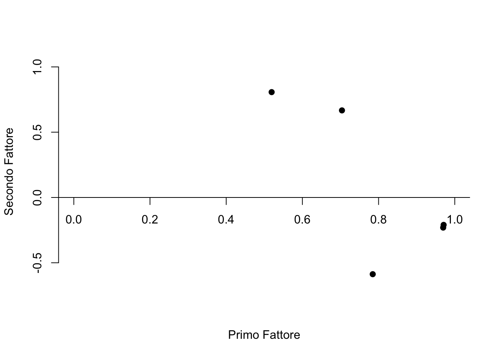

2.3 Rotazione nello spazio geometrico
2.3.1 Rotazione ortogonale
Come è stato notato nella sezione precedente, la matrice \(\boldsymbol{\Lambda}\) non è identificabile poiché non esiste una soluzione unica alla determinazione delle saturazioni fattoriali: qualunque matrice \(\hat{\boldsymbol{\Lambda}}^* = \hat{\boldsymbol{\Lambda}} \textbf{T}\), dove T è una matrice ortonormale di ordine \(m\), è in grado di riprodurre la matrice di varianze-covarianze allo stesso modo di \(\hat{\boldsymbol{\Lambda}}\). La matrice \(\hat{\boldsymbol{\Lambda}}\) è pertanto determinata a meno della moltiplicazione per una matrice ortonormale.
Definizione 2.1 Geometricamente, i pesi fattoriali costituiscono le coordinate di un punto (ci sono tanti punti quante sono le \(p\) variabili manifeste) in uno spazio avente un numero di dimensioni pari al numero \(m\) dei fattori.
Dal punto di vista geometrico, il problema dell’indeterminazione fattoriale si può descrivere facendo riferimento alla rotazione rigida dei punti che rappresentano le saturazioni fattoriali attorno l’origine del sistema di coordinate. Tale rotazione rigida lascia invariate le distanze tra i punti (ed è equivalente ad una rotazione (contraria) del sistema di assi cartesiani) e dà luogo ad un nuovo insieme di valori per i pesi fattoriali. Ciascuno di questi insiemi di pesi fattoriali così ottenuti produce la medesima matrice di correlazioni riprodotte dal modello fattoriale. L’indeterminazione fattoriale nasce dal fatto che sono possibili infinite rotazioni diverse degli assi.
2.3.2 Vincoli alla rotazione
Il problema della non identificabilità di \(\hat{\boldsymbol{\Lambda}}\) viene generalmente risolto imponendo dei vincoli alla rotazione. Il criterio che ci guida nella scelta di una delle possibili trasformazioni della matrice dei pesi fattoriali è quello della semplicità della matrice \(\hat{\boldsymbol{\Lambda}}\) (Thurstone, 1947), ovvero la vicinanza dei suoi elementi ai valori 0 e 1. Quanto più ciò si verifica tanto più risulta semplice l’interpretazione dei fattori comuni nei termini delle variabili. L’identificazione dei fattori risulta infatti semplificata se ciascuno di essi è fortemente correlato con un numero limitato di variabili ed è poco correlato con le altre.
Le rotazioni ortogonali lasciano immutate le comunalità nel caso di fattori incorrelati. Questo accade perché qualunque rotazione rigida rispetto all’origine preserva le distanze tra i punti identificati dai pesi fattoriali e, nel caso di fattori incorrelati, la comunalità non è nient’altro che la distanza dall’origine (al quadrato):
\[\hat{h}^2_i = \sum_{i=1}^m \hat{\lambda}_{ij}^2\notag\]
Rotazioni non ortogonali, però, mutano la quota di varianza spiegata da ciascun fattore, essendo questa data da
\[\frac{\sum_{i=1}^p \hat{\lambda}_{ij}^2}{\text{tr}(\textbf{S})}\notag\] oppure da
\[\frac{\sum_{i=1}^p \hat{\lambda}_{ij}^2}{\text{tr}(\textbf{R})}\notag\]
laddove \(\text{tr}(\textbf{R})=p\), con \(i=1, \dots, p\) (numero di item) e \(j=1, \dots, m\) (numero di fattori).
Diversi algoritmi sono stati proposti per la rotazione ortogonale dei fattori. Inizieremo ad esaminare una possibile soluzione al problema dell’indeterminazione fattoriale mediante il metodo grafico. Esamineremo poi i metodi Quartimax e Varimax.
2.3.3 Metodo grafico
Come si può ruotare il sitema degli assi? Se ci sono solo \(m=2\) fattori, per ottenere la loro rappresentazione geometrica utilizziamo un sistema di coordinate bidimensionale. L’ispezione visiva del diagramma delle saturazioni fattoriali ci può guidare alla scelta della rotazione più appropriata. Le righe di \(\hat{\boldsymbol{\Lambda}}\) corrispondono a coppie di pesi fattoriali (\(\hat{\lambda}_{i1}, \hat{\lambda}_{i2}\), con \(i=1, \dots, p\)) che possono essere interpretate come le coordinate di \(p\) punti (tanti quanti le variabili manifeste). Gli assi del diagramma vengono ruotati di un angolo \(\phi\) in modo tale da portarli il più vicino possibile ai punti presenti nel grafico. Le nuove coordinate (\(\hat{\lambda}_{i1}^*, \hat{\lambda}_{i2}^*\)) vengono calcolate come \(\hat{\boldsymbol{\Lambda}}^* = \hat{\boldsymbol{\Lambda}} \textbf{T}\), dove
\[\textbf{T} = \left[ \begin{array}{ c c } \cos{\phi} & - \sin{\phi}\\ \sin{\phi} & \cos{\phi} \end{array} \right] \notag \]
è una matrice ortogonale \(2 \times 2\).
Si considerino i dati di Brown, Williams e Barlow (1984) discussi da Rencher (2002). Ad una bambina di dodici anni è stato chiesto di valutare sette dei suoi conoscenti su cinque variabili: kind, intelligent, happy, likeable e just. Per queste cinque variabili, la matrice di correlazioni è
R <- matrix(c(
1.00, .296, .881, .995, .545,
.296, 1.000, -.022, .326, .837,
.881, -.022, 1.000, .867, .130,
.995, .326, .867, 1.000, .544,
.545, .837, .130, .544, 1.00
),
ncol = 5, byrow = TRUE, dimnames = list(
c("K", "I", "H", "L", "J"), c("K", "I", "H", "L", "J")
)
)Dalla matrice R estraiamo due fattori con il metodo delle componenti principali:
library("psych")
f.pc <- principal(R, 2, rotate = FALSE) ## Specified rotation not found, rotate='none' usedf.pc## Principal Components Analysis
## Call: principal(r = R, nfactors = 2, rotate = FALSE)
## Standardized loadings (pattern matrix) based upon correlation matrix
## PC1 PC2 h2 u2 com
## K 0.97 -0.23 0.99 0.0067 1.1
## I 0.52 0.81 0.92 0.0792 1.7
## H 0.78 -0.59 0.96 0.0391 1.9
## L 0.97 -0.21 0.99 0.0135 1.1
## J 0.70 0.67 0.94 0.0597 2.0
##
## PC1 PC2
## SS loadings 3.26 1.54
## Proportion Var 0.65 0.31
## Cumulative Var 0.65 0.96
## Proportion Explained 0.68 0.32
## Cumulative Proportion 0.68 1.00
##
## Mean item complexity = 1.6
## Test of the hypothesis that 2 components are sufficient.
##
## The root mean square of the residuals (RMSR) is 0.03
##
## Fit based upon off diagonal values = 1Nella figura 1.1, i punti rappresentano le cinque coppie di pesi fattoriali non ruotati.
plot(
f.pc$load[,1], f.pc$load[,2], bty = 'n', xaxt = 'n',
xlab = "Primo Fattore", ylab = "Secondo Fattore",
ylim = c(-.6, 1), xlim = c(0,1), pch = 19)
axis(1, pos = c(0,0))
abline(0, 0) 
Rencher (2002) nota che, per questi dati, una rotazione ortogonale di
\(-35^{\circ}\) ci porterebbe ad avvicinare gli assi ai punti nel
diagramma. Per verificare questo, disegnamo sul diagramma i nuovi assi
dopo una rotazione di \(-35^{\circ}\). Le istruzioni R sono le seguenti:
ar <- matrix(c(
0, 0,
0, 1,
0, 0,
1, 0
), ncol = 2, byrow = TRUE)
ar## [,1] [,2]
## [1,] 0 0
## [2,] 0 1
## [3,] 0 0
## [4,] 1 0angle <- 35
rad <- angle * pi / 180
T <- matrix(c(
cos(rad), -sin(rad),
sin(rad), cos(rad)), ncol = 2, byrow = TRUE)
round(T, 3)## [,1] [,2]
## [1,] 0.819 -0.574
## [2,] 0.574 0.819#> [,1] [,2]
#> [1,] 0.819 -0.574
#> [2,] 0.574 0.819
round(ar %*% T, 3)
#> [,1] [,2]
#> [1,] 0.000 0.000
#> [2,] 0.574 0.819
#> [3,] 0.000 0.000
#> [4,] 0.819 -0.574
arrows(0, 0, 0.574, 0.819, lwd = 2)
arrows(0, 0, 0.819, -0.574, lwd = 2)Nella figura 1.1 le due frecce rappresentano gli assi ruotati. È chiaro come tale rotazione di \(-35^{\circ}\) ha effettivamente l’effetto di avvicinare gli assi ai punti del diagramma. Se usiamo dunque il valore \(\phi = -35^{\circ}\) nella matrice di rotazione, possiamo calcolare le saturazioni fattoriali della soluzione ruotata \(\hat{\boldsymbol{\Lambda}}^* = \hat{\boldsymbol{\Lambda}} \textbf{T}\). Le saturazioni fattoriali ruotate non sono altro che la proiezione ortogonale dei punti sugli assi ruotati.
angle <- -35
rad <- angle * pi / 180
T <- matrix(c(
cos(rad), -sin(rad),
sin(rad), cos(rad)), ncol = 2, byrow = TRUE)
round(T, 3)
#> [,1] [,2]
#> [1,] 0.819 0.574
#> [2,] -0.574 0.819
round(f.pc$load %*% T, 3)
#> [,1] [,2]
#> K 0.927 0.368
#> I -0.039 0.962
#> H 0.977 -0.036
#> L 0.915 0.384
#> J 0.189 0.950 La soluzione ottenuta in questo modo riproduce quella riportata da Rencher (2002).
Rotazione di -35\(^{\circ}\) per le saturazioni fattoriali calcolate sui dati di Brown, Williams e Barlow (1984).
2.3.4 Medodi di rotazione ortogonale
Una tipo di rotazione ortogonale molto utilizzato è la rotazione Varimax (Kaiser, 1958). La matrice \(\hat{\boldsymbol{\Lambda}}\) è semplificata in modo tale che le varianze dei quadrati degli elementi \(\lambda_{ij}\) appartenenti a colonne diverse di \(\hat{\boldsymbol{\Lambda}}\) siano massime. Se le saturazioni fattoriali in una colonna di \(\hat{\boldsymbol{\Lambda}}\) sono simili tra loro, la varianza sarà prossima a zero. Tale varianza è tanto più grande quanto più i quadrati degli elementi \(\lambda_{ij}\) assumono valori prossimi a \(0\) e \(1\). Amplificando le correlazioni più alte e riducendo quelle più basse, la rotazione Varimax agevola l’interpretazione di ciascun fattore.
Usando la funzione factanal() del modulo base, la rotazione Varimax
può essere applicata alla soluzione ottenuta mediante il metodo di
massima verosimiglianza. Usando le funzioni principal() e
factor.pa() disponibili nel pacchetto psych, la rotazione Varimax
può essere applicata alle soluzioni ottenute mediante il metodo delle
componenti principali e il metodo del fattore principale.
La figura 1.2 mostra i risultati della rotazione Varimax per la soluzione ottenuta con il metodo delle componenti principali sui dati di Brown et al. (1994):
f_pc <- principal(R, 2, n.obs = 7, rotate = "varimax")
f_pc
#> RC1 RC2 h2 u2 com
#> K 0.95 0.30 0.99 0.0067 1.2
#> I 0.03 0.96 0.92 0.0792 1.0
#> H 0.97 -0.10 0.96 0.0391 1.0
#> L 0.94 0.32 0.99 0.0135 1.2
#> J 0.26 0.93 0.94 0.0597 1.2Saturazioni fattoriali calcolate sui dati di Brown, Williams e Barlow (1984).
Il metodo Quartimax (Neuhaus e Wringley, 1954) opera una semplificazione della matrice \(\hat{\boldsymbol{\Lambda}}\) massimizzando le covarianze tra i quadrati degli elementi \(\lambda_{ij}\) appartenenti a righe diverse, subordinatamente alla condizione che la varianza delle righe rimanga inalterata.
2.3.5 Metodi di rotazione obliqua
Parlare di rotazione obliqua significa usare un termine improprio: per definizione, infatti, una rotazione implica una trasformazione ortogonale che preserva le distanze. Secondo Rencher (2002), un termine migliore sarebbe trasformazione obliqua. Il termine rotazione obliqua, comunque, fa parte dell’uso corrente.
Nella rotazione obliqua, gli assi della soluzione ruotata non devono rimanere ortogonali e quindi possono più facilmente avvicinarsi ai raggruppamenti di punti nello spazio delle saturazioni fattoriali (assumendo che dei raggruppamenti esistano). Vari metodi analitici sono stati proposti per ottenere una rotazione obliqua. Qui esamineremo brevemente solo uno di essi, il metodo Direct Oblimin.
Il criterio usato nel metodo Direct Oblimin (Jennrich e Sampson, 1966) è il seguente: \[\sum_{ij} \left(\sum_v \lambda_i^2 \lambda_j^2 - w \frac{1}{p} \sum_v \lambda_i^2 \sum_v \lambda_j^2\right)\notag\] dove \(\sum_{ij}\) si riferisce alla somma su tutte le coppie di fattori \(ij\). In questo caso si procede ad una minimizzazione piuttosto che a una masssimizzazione.
Con le istruzioni seguenti vengono simulate 100 osservazioni su quattro variabili nel caso di una normale multivarata con le medie e la matrice \(\boldsymbol{\Sigma}\) specificata qui sotto:
library(GPArotation)
library(MASS)
library(psych)
sigma <- matrix(
c(
1, .8, .6, .7,
.8, 1, .6, .7,
.6, .6, 1, .9,
.7, .7, .9, 1
),
ncol = 4,
byrow = TRUE
)
sigma
#> [,1] [,2] [,3] [,4]
#> [1,] 1.0 0.8 0.6 0.7
#> [2,] 0.8 1.0 0.6 0.7
#> [3,] 0.6 0.6 1.0 0.9
#> [4,] 0.7 0.7 0.9 1.0
mu <- c(9, 16, 24, 32)
set.seed(24)
X <- mvrnorm(
n = 100,
mu,
sigma,
empirical = FALSE
)
R <- cor(X)
print(R, 3)
#> [,1] [,2] [,3] [,4]
#> [1,] 1.000 0.755 0.567 0.619
#> [2,] 0.755 1.000 0.597 0.667
#> [3,] 0.567 0.597 1.000 0.895
#> [4,] 0.619 0.667 0.895 1.000Eseguiamo l’analisi fattoriale senza rotazione:
pr_none <- principal(R, 2, rotate = "none")
pr_none
#> V PC1 PC2
#> 1 0.84 0.44
#> 2 0.86 0.36
#> 3 0.88 -0.42
#> 4 0.92 -0.33Per usare la rotazione Oblimin (così come molte altre) è necessario
caricare il pacchetto GPArotation. Le saturazioni fattoriali calcolate
con il metodo delle componenti principali e la rotazione Oblimin si
ottengono nel modo seguente:
pr_oblimin <- principal(R, 2, rotate = "oblimin")
pr_oblimin
#> TC2 TC1
#> 0.96 -0.03
#> 0.88 0.07
#> -0.08 1.03
#> 0.21 0.82 Tramite l’algoritmo Oblimin, gli assi vengono ruotati fino a formare l’angolo che separa le due frecce nella figura 1.3.
Dall’output di R ricaviamo l’informazione secondo cui il coseno di tale angolo è 0.63.
#> With component correlations of
#> TC2 TC1
#> TC2 1.00 0.63
#> TC1 0.63 1.00Le istruzioni usate per disegnare il grafico 1.3 sono le seguenti:
plot(
pr_none$load[, 1],
pr_none$load[, 2],
bty = "n",
xlab = "Primo Fattore",
ylab = "Secondo Fattore",
xlim = c(0, 1),
ylim = c(-1, 1),
pch = 19,
cex.lab = 2
) Per disegnare le frecce rappresentate nella figura (che rappresentano i nuovi assi coordinati) procediamo come segue. Si noti che le saturazioni fattoriali sono raggruppate in due cluster distinti. Disegniamo innanzitutto una freccia che rappresenta uno degli assi in modo tale che si avvicini il più possibile a uno dei cluster.
arrows(0, 0, 1, 0.48, lwd = 2) Per disegnare la freccia che rappresenta il secondo asse facciamo uso della correlazione tra i due fattori (\(\phi\) = 0.63). Tale correlazione corrisponde al coseno dell’angolo che separa i due assi.
cos.phi <- pr.oblimin$Phi[1, 2]
sin.phi <- sqrt(1 - cos.phi^2)La matrice di trasformazione per ruotare un vettore di un angolo prefissato \(\phi\) è
T <- matrix(c(
cos.phi, -sin.phi,
sin.phi, cos.phi
),
byrow = TRUE,
ncol = 2)Mediante il prodotto tra il vettore che rappresenta l’apice del primo vettore e la matrice di trasformazione troviamo le coordinate del vettore ruotato dell’angolo \(\phi\). Per disegnare la freccia che rappresenta il secondo asse usiamo dunque le seguenti istruzioni:
P <- c(1, .48)
P1 <- P %*% T
arrows(0, 0, P1[1], P1[2], lwd = 2) Rotazione obliqua.